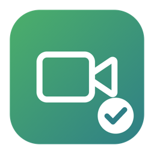

Мит тексеру
Ноутбукке арналған бағдарлама: Meet-те оқушыларды түгендейді, кестеге белгілейді, камерасын тексереді. Оқушы шығып кетсе — телефоныңызға Telegram хабар келеді, оқушының өзіне WhatsApp-қа «қайта кірейік» деп жазады. Бәрін Telegram боттан да басқаруға болады.
Жүктеп алу
Компьютеріңізге сәйкесін таңдаңыз. Алдымен Google Chrome орнатылған болуы керек.
MeetTekseru-mac-arm64.dmg · 114 МБсіздің компьютер Mac — Intel
MeetTekseru-mac-x64.dmg · 121 МБсіздің компьютер Windows 10 / 11
MeetTekseru-win-x64.exe · 116 МБсіздің компьютер
Mac-та процессорды білу үшін: → «Об этом Mac» → «Чип»: Apple M… болса — бірінші, Intel болса — екінші.
Mac
.dmg файлын ашып, «Мит тексеру» белгісін Applications папкасына сүйреңіз. Бірінші ашқанда «не удалось проверить» деп шықса — Готово басып, Системные настройки → Конфиденциальность и безопасность → төменде «Всё равно открыть». Ертерек жүктеген болсаңыз және «повреждено» шықса — қайта жүктеңіз немесе Терминалда: xattr -cr "/Applications/Мит тексеру.app"
Windows
.exe файлын ашыңыз. «Windows защитил ваш компьютер» шықса: Подробнее → Выполнить в любом случае. Жұмыс үстелінде белгісі пайда болады.
Бір реттік баптау
Кестені bajburinovasylmurat@gmail.com-мен Редактор ретінде бөлісіп, «Баптаулар»-ға сілтемесін қойыңыз. «Сабаққа кіру» басқанда ашылған Chrome терезесінде Google-ға кіріп, WhatsApp QR-кодын сканерлеңіз. Telegram-ды қосыңыз.
- Бағдарламаны ашып, мит сілтемесін қойыңыз → Сабаққа кіру. Meet пен WhatsApp бөлек Chrome терезелерінде ашылады — Meet-ке кәдімгідей қосылыңыз.
- Қатысу — митте барларды кестеде белгілейді. Камераны тексеру — кімнің камерасы өшік екенін көрсетеді.
- Бақылау-ды қосыңыз: әр минут сайын тексереді, шыққан оқушыға WhatsApp-қа өзі жазады, сізге Telegram-ға хабар келеді. Топқа, ата-анаға ешқашан жазбайды.
- Telegram-ды қосқан соң @meetkhabar_bot-та 📋 Қатысу, 📷 Камера, ▶️ Бақылау, 📊 Кім жоқ батырмалары шығады — тексеруді телефоннан басқарасыз (ноутбук пен бағдарлама қосулы тұрсын). Шыққан оқушының хабарының астында ✉️ батырмасы — ватсапқа қайта жазады.
- WhatsApp-та оқушы контактілері тегінен басталсын: «🦋 ЕРМЕКБАЙ АЛИШЕР | МАТ-21».
- Сабақ кезінде бағдарламаны да, Chrome терезелерін де жаппаңыз (кішірейтіп қоюға болады).